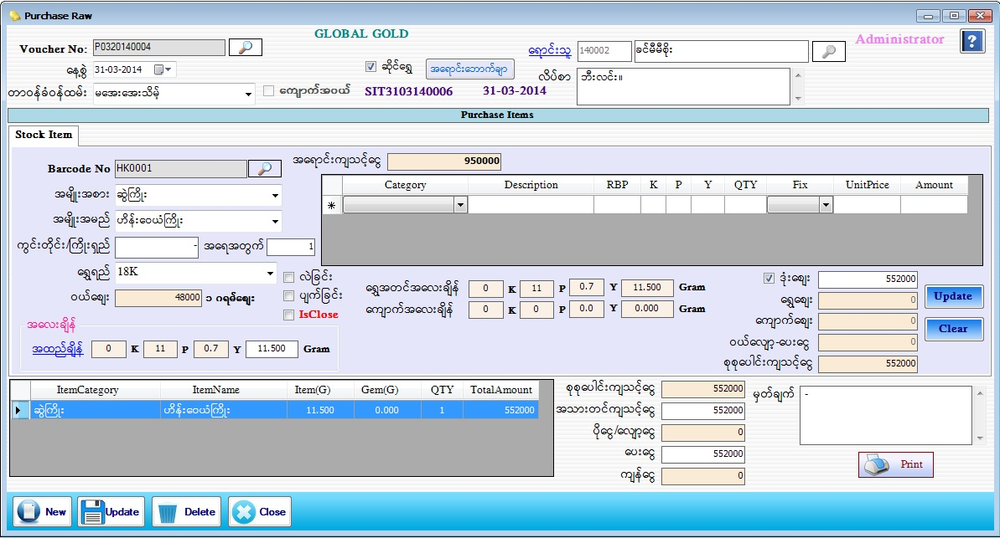

Purchase Raw For Gold Shop Setup
PurchaseRaw
PurchaseRaw(GoldShop)
PurchaseRaw(Gems)

- Purchase Raw Material Item တွင် ဆိုင်ရွှေ အတွက်ဖြစ်ပါက ဆိုင်ရွှေ check box တွင် အမှန်ခြစ် ခြစ်ပေးပါက ဆိုင်ရွှေအတွက် Form ပေါ်လာပါလိမ့်မည်။
- Voucher No သည် software မှ Auto တပ်ပေးပါမည်။
- နေ့စွဲတွင် လက်ရှိရောက်နေသော Date ကိုပြပေးမည် ဖြစ်သည်။
- တာဝန်ခံ ဝန်ထမ်းကို ရွေးချယ်ပါ။
- Sale Voucher button ကို နှိပ်လိုက်ပါက Order Voucher နှင့် Sale Voucher များပေါ်လာပါမည်။ ပြန်လည် ဝယ်ယူမည့် Voucher ကိုရွေးချယ်ပါ။ ဆိုင်တွင် အော်ဒါလုပ်ထားသော Order Voucher များကိုလည်း ပြန်လည်ဝယ်ယူ နိုင်ပါ သည်။
- Barcode No ဘေးရှိမှန်ဘီလူးကိုနှိပ်ကာ ပြန်လည်ဝယ်ယူမည့်ဘားကုတ်နံပါတ်ကို ရွေးချယ်ပေးရပါမည်။ ရွှေရည်တွင် ကျပ်သားချိန်ကို ရွေးထားပါက အထည်ချိန် သတ်မှတ်ရာတွင် K/P/Y ကိုသာရိုက်ထည့်နိုင်မည်ဖြစ်ပြီး Gram ချိန်ရွေးထားပါက gram အလေးချိန် ကိုသာ ရိုက်ထည့်နိုင်မည်ဖြစ်သည်။
- ပြန်လည်ဝယ်ယူမည့်ဘားကုတ်တွင်ကျောက်ချိန်ပါရှိပါက ဘေးရှိ ဇယားကွက်တွင် ပါဝင်သောကျောက် များ ကိုတွေ့မြင်ရပါမည်။ အထည်ချိန်မှ ကျောက်အလေးချိန်ကို နှုတ်လိုက်ပါက ရွှေ အတင်အလေးချိန်ကို Auto ပြပေးပါလိမ့်မည်။
- ဝယ်ဈေးသည် ဈေးသတ်မှတ်ခြင်း (Master Setup -> Current Price) တွင်သတ်မှတ်ခဲ့သောဈေးများထဲမှ နောက်ဆုံးနေ့စွဲအချိန်၏ ဝယ်ဈေးကိုပြပေး ခြင်းဖြစ်ပါသည်။ လဲဈေးကိုအမှန်ခြစ်လျှင် ဈေးသတ်မှတ်ခြင်းတွင်သတ်မှတ်ခဲ့သော လဲဈေးနှုန်း(သို့)ရာခိုင်နှုန်းကျ လာပါမည်။ ပျက်ဈေးကိုအမှန်ခြစ်လျှင် ဈေးသတ်မှတ်ခြင်းတွင်သတ်မှတ်ခဲ့သော ရာခိုင်နှုန်းကျလာပါမည်။ ဝယ်ဈေး၊လဲဈေး၊ပျက်ဈေး တို့ကို ရာခိုင်နှုန်းများသတ်မှတ်ထားခဲ့လျှင် ပေါက်ဈေး(ရောင်းဈေး)ကို ရွှေချိန်ဖြင့်ဈေး တွက်ပြီး သတ်မှတ်ထားသောရာခိုင်နှုန်းကိုလျော့လိုက်မည်ဖြစ်ပါသည်။
- ဒုံးဈေးကိုအမှန်ခြစ်ထားပြီးဈေးတစ်ခုဖြတ်ကာပြန်လည်ဝယ်ယူနိုင်ပါသည်။အကယ်၍ ဝယ်ဈေး၊လဲဈေး၊ပျက်ဈေး များသည် ရာခိုင်နှုန်းဖြစ်နေပါက Barcode No ဘေးရှိ အရောင်းကျသင့်ငွေကို ရာခိုင်နှုန်းလျှော့ပြီးသားတန်ဖိုးကို ဒုံးဈေးအကွက်တွင်တွေ့မြင်ရပါမည်။
- ဒုံးဈေး ကိုအမှန်ခြစ် မခြစ်ထားလျှင် ဝယ်ဈေးသည်နှုန်းဖြစ်နေပါက ရွှေအတင်အလေးချိန်နှင့်ဈေးတွက်ပေးပါမည်။ ဝယ်ဈေး(သို့)လဲဈေး(သို့)ပျက်ဈေးတို့သည် ရာခိုင်နှုန်းများသတ်မှတ်ထားပါက လက်ရှိနောက်ဆုံးပေါက်ဈေး (ရောင်းဈေး)ကိုရာခိုင်နှုန်းလျှော့ပြီးသားတန်ဖိုးအားရွှေဈေးတွင်မြင်နိုင်ပါသည်။
- ဝယ်လျော့(%) သည် Customer အားရောင်းတုန်းကယူသောအလျော့ကို ထိုCustomerအား(%)တွက်ပြီး အပိုဆောင်းပြန်လည်ပေးခြင်းဖြစ်ပါသည်။ ထိုဝယ်လျော့(%)သည် ထည့်လဲရသလို၊မထည့်ရင်လဲရပါသည်။
- ထို့နောက် Add Buttonနှိပ်ပြီး Dataများဖြည့်သွင်းပေးရမည်။
- Add လုပ်ပြီးသား ပစ္စည်းတစ်ခုအားပြန်လည်ပြင်ဆင်လိုပါက အောက်မှ Grid မှ မိမိပြင်ဆင်လိုသော Row ၏ ရှေ့ဆုံးကိုနှိပ်ပါက သက်ဆိုင်ရာ Row ၏ Data များကို အပေါ်တွင်ပြန်လည်ပြင်ဆင်နိုင်မည်ဖြစ်သည်။ပြီးနောက် Update Button အားနှိပ်ပါ။
- အသားတင်ကျသင့်ငွေ၊ ပေးငွေ၊ မှတ်ချက် တွင် ဖြည့်စွက်ပါ။ စုစုပေါင်းကျသင့်ငွေ၊ ပိုငွေ-လျှော့ငွေ၊ ကျန်ငွေ တို့တွင် Software မှ Auto ကျပေးမည် ဖြစ်သည်။
- Data များဖြည့်စွက်ပြီးပါက Save Button ကိုနှိပ်၍ သိမ်းဆည်းနိုင်ပါသည်။ Purchase Invoice Voucher ထုတ်လိုလျှင် Print Button ကိုနှိပ်၍ Voucher ထုတ်နိုင်ပါသည်။
- သိမ်းဆည်းပြီးသား Data များအား ပြန်လည်ကြည့်ခြင်း၊ ပြင်ဆင်ခြင်းများပြုလုပ်ချင်ပါက Voucher No ၏ ဘေးတွင် ရှိသော မှန်ဘီလူး button ကိုနှိပ်ပြီးပြန်လည်ကြည့်ရှုပြင်ဆင်ချင်သော Purchase Item အား ရွေးချယ် ပြီးပြင်နိုင် ပါသည်။
- သိမ်းဆည်းပြီးသား ထည့်ပြီးသား Data များကို ဖျက်လိုလျှင် မှန်ဘီလူး button အားနှိပ်ပြီးရှာပါ။ ထို့နောက် မိမိဖျက်လိုသော Data ကို Delete Button ကိုနှိပ်၍ ဖျက်နိုင်ပါသည်။
- Purchase Item အသစ်ထည့်လိုပါက New Button ကိုနှိပ်ပြီး အသစ်ထည့်နိုင်ပါသည်။
- Purchase Raw Material Item Form အား အသုံးပြုပြီးပါက Close Button ကိုနှိပ်၍ ပိတ်နိုင်ပါသည်။